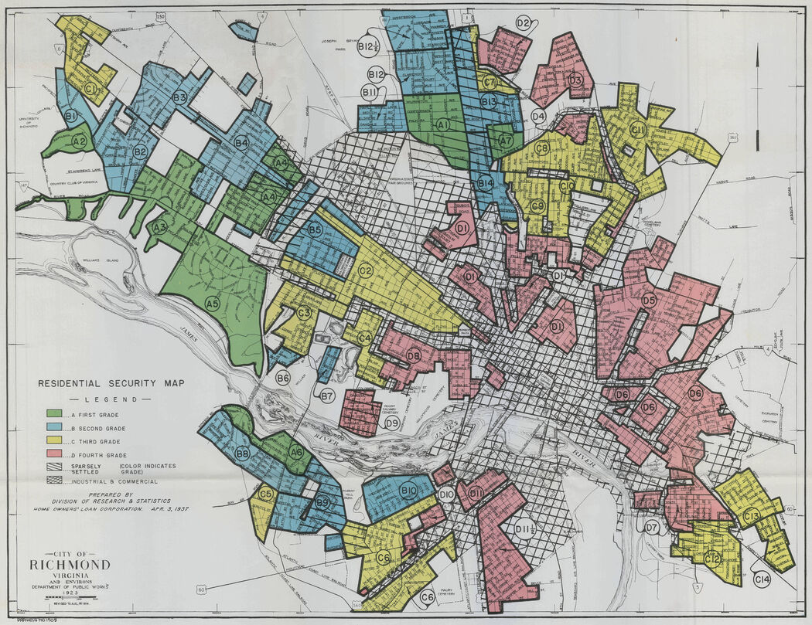

Climate Justice
EES 3310/5310
Global Climate Change
Jonathan Gilligan
Class #33: Monday, April 11 2022
Vulnerability to Heat Waves
- Cities and heat risks:
- Heat waves worse in areas with fewer trees & green spaces
- Neighborhoods with lower income, more people of color, are hotter
- Income and vulnerability
- Households without air conditioning
- Difficulty affording both medicine and electric bills

Legacy of Racism and Vulnerability to Heat

B. Plumer & N. Popvich, “How Decades of Racist Housing Policies Left Neighborhoods Sweltering” New York Times Aug 24, 2020.

Economic vulnerability
- Tropical nations are expected to suffer much greater economic losses from climate change than nations at higher latitudes.
- Climate change has already contributed significantly to global economic inequality since 1960.

M. Burke et al., Nature 527, 235 (2015). doi: 10.1038/nature15725